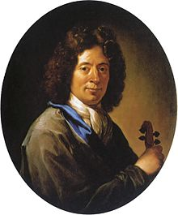
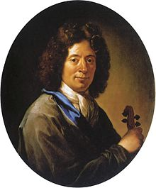

Arcangelo Corelli
Arcangelo Corelli (n. 17 februarie 1653 - d. 8 ianuarie 1713) a fost un compozitor și violonist italian, considerat unul dintre cei mai de seamă violoniști ai generației sale.
Registrele de botez indică faptul că Corelli s-a născut pe 17 februarie 1653 în orașul Fusignano, parte a eparhiei Ferrara. Familia sa era proprietar de pământuri care trăia în Fusignano din 1506 (un membru al familiei Corelli s-a mutat aici de la Roma) și, deși erau prosperi, nu făceau parte din clasa nobilă, după cum au susținut unele biografii ale lui Corelli. Tatăl lui Corelli, de la care a preluat numele de Arcangelo, a decedat cu cinci săptămâni înainte de nașterea fiului său. Prin urmare Corelli a fost crescut de mama sa Santa împreună cu cei patru frați mai mari.
Corelli a compus 48 de sonate trio, 12 sonate pentru vioară și basso continuo și 12 concerti grossi.
Șase lucrări cu număr opus, publicate între 1888 și 1891, sunt oficial recunoscute ca fiind autentice, împreună cu alte câteva lucrări.
Opus 1: 12 sonata da chiesa (sonate trio pentru două viori și continuo) (Roma, 1681)
Opus 2: 12 sonata da camera (sonate trio pentru două viori și continuo) (Roma, 1685)
Opus 3: 12 sonata da chiesa (sonate trio pentru două viori și continuo) (Roma, 1689)
Opus 4: 12 sonata ca camera (sonate trio pentru două viori și continuo) (Roma, 1694)
Opus 5: 12 Suonati a violino e violone o cimbalo (6 sonate da chiesa și 6 sonate da camera pentru vioară și continuo) (Roma, 1700)
Opus 6: 12 concerti grossi (8 concerti da chiesa si 4 concerti da camera pentru 2 viori, violoncel, orchestră de coarde și continuo) (Amsterdam, 1714)
Fără număr opus: Sinfonia în Re minor
Fără număr opus: Sonata a Quattro (Rogers, Amsterdam, 1699)
Fără număr opus: Sonata a Quattro (Rogers, Amsterdam, 1699, incomplet, dezbătut)
Fără număr opus: Sonata a Quattro pentru trompetă, două viori și basso continuo
Fără număr opus: 6 Sonate a tre (Amsterdam, 1714)
 
